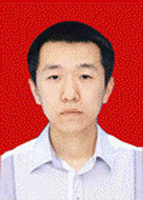

不简单的简单
薛昶，男，生命科学学院生物技术专业06级本科生。曾获得国家奖学金、宝钢奖学金、校长奖学金、优秀学生等荣誉称号。所在 科研小组的阶段性研究成果在首届吉林省大学生生命科学创新实验大赛中获得一等奖。2009年9月，通过了北京大学生命科学学院的推荐免试研究生面试，被录 取为本科起点直接攻读博士学位研究生。
薛昶出生在一个普通工人家庭，在父母的影响下，从小就养成了勤奋刻苦、乐观向上的性格。2006年薛昶考入了东北师范大学生命科学学院。入学伊始，他 就对自己说要珍惜在大学学习的机会、要在东北师大度过充实的大学四年。军训过后，薛昶正式开始了他大学第一
薛昶出生在一个普通工人家庭，在父母的影响下，从小就养成了勤奋刻苦、乐观向上的性格。2006年薛昶考入了东北师范大学生命科学学院。入学伊始，他 就对自己说要珍惜在大学学习的机会、要在东北师大度过充实的大学四年。军训过后，薛昶正式开始了他大学第一
个学期的学习生活。几乎每天早晨，薛昶都是第一个来到教室。课堂上，他会坐在教室的第一排认真听讲。当结束了一天 的课程，在学院的自习室总会看到薛昶的身影，在那他会把当天学过的知识进行复习和总结。对于自己学习中遇到的不清楚的地方，他总会及时地向老师或同学请教，把问题彻底弄明白。付出总有回报，薛昶第一学期的成绩为年级的第一名。面对成绩，他表现出的更多是平静，没有沾沾自喜，也没有放松对自己的要求。在接 下来的日子里，他所做的是像以前一样或是可以说更加努力地学习和钻研。这一坚持，就是三年，在这三年中，薛昶的成绩始终排在年级前三名，专业课几乎门门优 秀。大学期间获得过国家奖学金、宝钢奖学金、校长奖学金等多项奖学金和“优秀学生”荣誉称号。
随着学习的渐渐深入，薛昶逐渐意识到了在大学阶段只进行书本知识的学习是远远不够的，还需要在自己所学专业领域积极进行实践。从大二学年开始，薛昶就 开始参与到校本科生科研项目之中。2007年10月，薛昶以组员的身份参加了首届国家大学生创新实验计划。除了每天要正常上课，薛昶将大量的课余时间投入 到项目实验之中。当项目开展过程中遇到问题的时候，薛昶就和指导老师还有小组的其他成员一起讨论，设计解决方案。反复实验摸索条件是枯燥和乏味的，但他却 总是能够认认真真地完成。因为他知道在科学研究的道路上没有人能够随随便便成功，任何人都需要付出辛勤的汗水。正是对科研的这一份执着，推动着他不断前 行。2009年9月份，薛昶所在的项目小组的阶段性研究成果在吉林省首届大学生生命科学创新实验设计大赛中获得一等奖。项目进展的过程中，薛昶对自己所学 专业的兴趣日益浓厚，而希望自己可以继续在生命科学领域学习和研究的愿望亦日益强烈。
为了能够全方面锻炼自己的能力，提高自己的综合素质，薛昶进入大学时就参加了院学生会，在学生会的三年时间从一名普通的干事成长为一名部长级干部。大 二时，薛昶又竞选成功，担任了年级学习委员。面对平日里繁杂、琐碎的工作，薛昶没有抱怨，因为他知道不能够辜负老师和同学们对自己的一份信任。作为一名学 生干部，就是要把同学们放在首位，全心全意为广大同学服务。平日里，他总是细致耐心地去办好每件工作、解决好每个问题。架起了老师和同学之间的一座桥梁， 最大程度上保障了同学们的学习生活有序进行。
也许你会问，他哪来的这么多时间，去做这么多的事情，而且做得都还很出色。薛昶的答案是挤时间和寻求方法。除了早起晚睡、放弃双休日，更重要的是还要 规划和充分利用好每天的时间。薛昶在学习过程中，也更加注重掌握学习方法和提高学习效率，逐渐摸索出适合自己的一套学习方法。
在2009年的夏天，通过选拔，薛昶参加了北京大学生命科学学院举办的首届全国优秀大学生暑期研究班，和来自全国各个高校的优秀学生一同聆听了知名专 家学者的讲座，这使他对所学专业的前沿领域也有了更加深刻的了解。在接下来的研究生推荐免试面试中，薛昶凭借其优异的专业成绩和突出的科研综合素质，被北 京大学生命科学学院录取为本科起点直接攻读博士学位研究生。在梦想之路上，薛昶又向前迈进了一步。在未来的日子里，相信薛昶会用自己的勤奋、坚持和拼搏， 更加执着地追求他的梦想！
随着学习的渐渐深入，薛昶逐渐意识到了在大学阶段只进行书本知识的学习是远远不够的，还需要在自己所学专业领域积极进行实践。从大二学年开始，薛昶就 开始参与到校本科生科研项目之中。2007年10月，薛昶以组员的身份参加了首届国家大学生创新实验计划。除了每天要正常上课，薛昶将大量的课余时间投入 到项目实验之中。当项目开展过程中遇到问题的时候，薛昶就和指导老师还有小组的其他成员一起讨论，设计解决方案。反复实验摸索条件是枯燥和乏味的，但他却 总是能够认认真真地完成。因为他知道在科学研究的道路上没有人能够随随便便成功，任何人都需要付出辛勤的汗水。正是对科研的这一份执着，推动着他不断前 行。2009年9月份，薛昶所在的项目小组的阶段性研究成果在吉林省首届大学生生命科学创新实验设计大赛中获得一等奖。项目进展的过程中，薛昶对自己所学 专业的兴趣日益浓厚，而希望自己可以继续在生命科学领域学习和研究的愿望亦日益强烈。
为了能够全方面锻炼自己的能力，提高自己的综合素质，薛昶进入大学时就参加了院学生会，在学生会的三年时间从一名普通的干事成长为一名部长级干部。大 二时，薛昶又竞选成功，担任了年级学习委员。面对平日里繁杂、琐碎的工作，薛昶没有抱怨，因为他知道不能够辜负老师和同学们对自己的一份信任。作为一名学 生干部，就是要把同学们放在首位，全心全意为广大同学服务。平日里，他总是细致耐心地去办好每件工作、解决好每个问题。架起了老师和同学之间的一座桥梁， 最大程度上保障了同学们的学习生活有序进行。
也许你会问，他哪来的这么多时间，去做这么多的事情，而且做得都还很出色。薛昶的答案是挤时间和寻求方法。除了早起晚睡、放弃双休日，更重要的是还要 规划和充分利用好每天的时间。薛昶在学习过程中，也更加注重掌握学习方法和提高学习效率，逐渐摸索出适合自己的一套学习方法。
在2009年的夏天，通过选拔，薛昶参加了北京大学生命科学学院举办的首届全国优秀大学生暑期研究班，和来自全国各个高校的优秀学生一同聆听了知名专 家学者的讲座，这使他对所学专业的前沿领域也有了更加深刻的了解。在接下来的研究生推荐免试面试中，薛昶凭借其优异的专业成绩和突出的科研综合素质，被北 京大学生命科学学院录取为本科起点直接攻读博士学位研究生。在梦想之路上，薛昶又向前迈进了一步。在未来的日子里，相信薛昶会用自己的勤奋、坚持和拼搏， 更加执着地追求他的梦想！